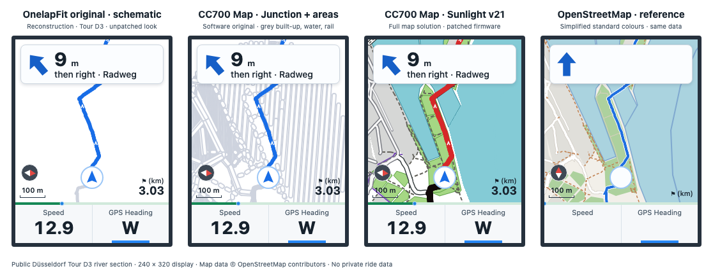
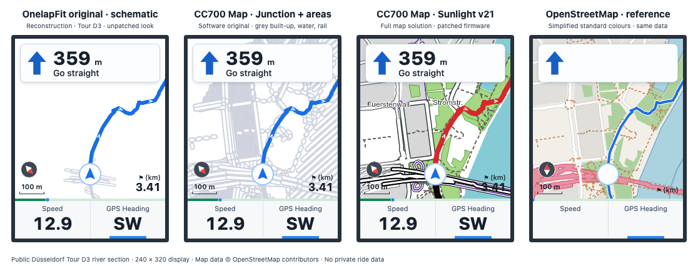
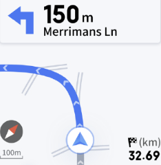
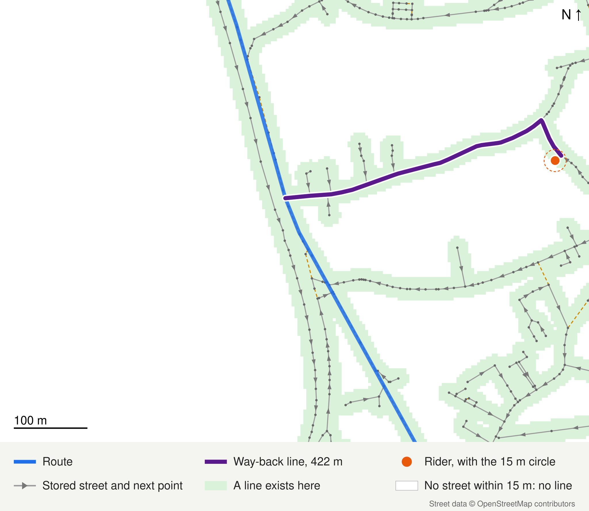
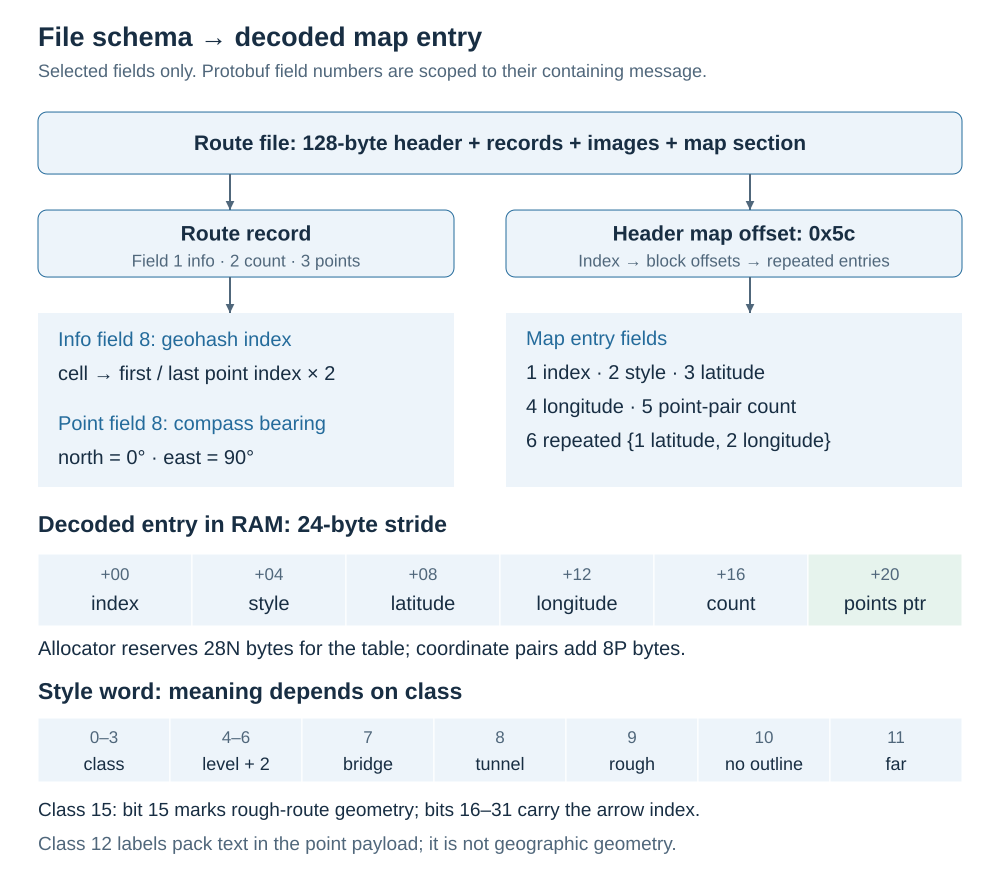
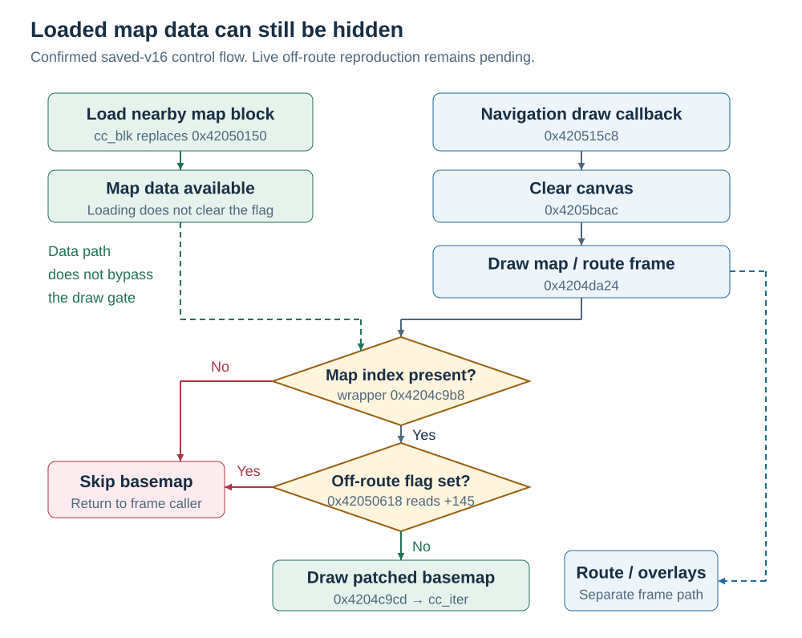
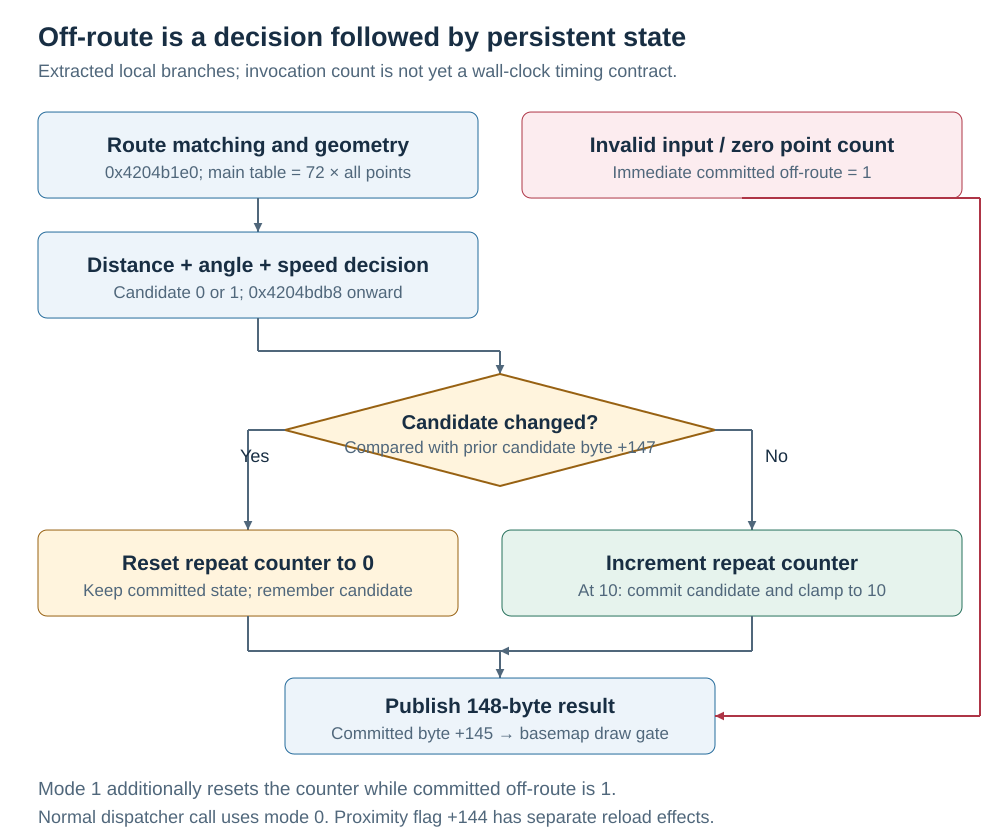
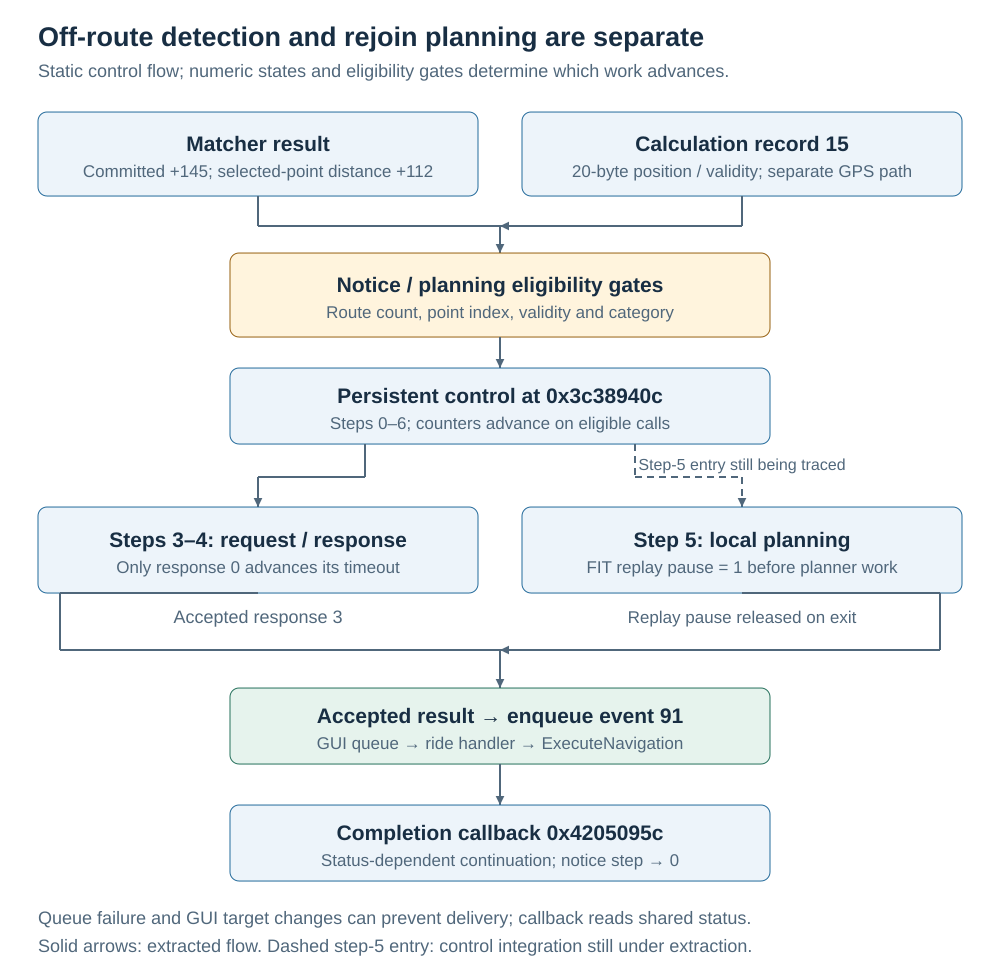

1What you get
The same position on four maps. The route is the public Düsseldorf Tour D3, river section.

1 · OnelapFit original
Thick blue route, small chevrons, about 200 m of each road that crosses the route. A reconstruction. OnelapFit did not make it.
2 · Junction map
Grey built-up rows, striped water, dashed rail. For the original firmware. Read back from a route file.
3 · Sunlight v21 map
Coloured map with an opaque red route. For the patched firmware. Read back from a route file.
4 · OpenStreetMap reference
The same map data in simplified standard colours. Reference only.
The four maps along the route

| Moment | Picture |
|---|---|
| Far from the turn: go straight | Four panels |
| Near the 300 m threshold | Four panels |
| Near the turn | Four panels |
| At the turn | Four panels |
| After the turn | Four panels |
| On the next street | Four panels |


The display
- Two-row turn card: the distance and one caption.
- Circular rider marker, compass, 100 m scale, distance-to-finish flag.
- Progress strip, Speed and GPS Heading.
- Fonts, rasterization, chevron spacing and the lower panel are approximations.
- The red route is an 8 px core on a near-black edge. The blue route is a 6 px core with a light casing.

What the page adds to a GPX track
Turn prompts
From the track shape and from OpenStreetMap junctions near the track. A noisy or sparse track can still give a missed or false prompt.
One caption row
With a then left · Street hint when a second turn comes within 50 m.
Indexed route points
A geohash index for progress tracking. The native rejoin behaviour still has gaps.
A map around the route
Stored in the route file.
2How to use
- Open the page in Chrome on Android.
- Select the firmware that is on your CC700. Open Einstellungen to change the optional map layers.
- Select a GPX file, or share it to the page from a different app. The page makes the route immediately. For a new region, the page needs internet.
- Close OnelapFit, because it holds the Bluetooth connection. Stop the navigation on the CC700.
- Push An CC700 senden. The route menu of the CC700 shows the GPX name.
Push Abspielen to replay the route at 1×, 4× or 8× speed. The slider moves to any point of the route.
3Settings
The page starts in Original (Kreuzungskarte). Select a Patch profile only if your CC700 has that patch for firmware V1.414.
| Junction map (Original) | Full Sunlight map (Patch) | |
|---|---|---|
| Map drawing | connected grey lines with a white core | coloured map |
| Roads | widths vary by road class | main, minor, service, path, cycleway, track |
| Areas | optional grey built-up areas and striped water | built-up, green, water, with outlines |
| Rail and tram | option: long dash | rail, tram lines, tram stops |
| Bridges, tunnels | no | black edge for bridges, dashed edge for tunnels |
| Street names on the map | no | yes |
| Traffic signals | no | yes |
| Route line | blue | red |
| Turn arrow on the map | no | option (off by default), 150 m before the turn |
| Map when off route or riding backwards | can disappear | can stay visible within the area stored in the route file |
Optional layers for the patched firmware: street names, traffic signals, tram stops, tram lines, rough tracks, footways and paths, park paths and cycle tracks next to streets, separate carriageways, turn arrow.
How far the stored map reaches
- The styled map has separate budgets for bytes, allocations and drawing work.
- Geometry near the route keeps its resolution.
- Make the route again to use this. Files that are on the device do not change.
- Details: adaptive map budget, map limits.
4How it works
All steps run in the browser on the phone.
Privacy
The GPX stays on the phone. The Overpass server sees only the grid cells, not the route. With the way-back option on, the server also sees one box around the full route.
Patched firmware
The v18 to v21 patch changes the map drawing of firmware V1.414. It is not part of this repository. A route file for the patched firmware does not show a usable map on the original firmware.
Test in Node
tools/test_route.mjs makes a route file with the page code. Add ?debug to the page address to see the Bluetooth log.
5Way-back line test
When the rider leaves the route, the original firmware shows only a direct arrow. The way-back test shows a line along the streets to the route.

Move the pointer or your finger. The page shows the line for that position.
Three steps
- Page or PC. For each street point within 2 km of the route, calculate the shortest permitted street way to the route. Each point stores only its next point and its distance.
- Device. Find the stored street piece nearest to the rider. It must be within 15 m. The search reads the 3 × 3 cells of 128 m around the rider.
- Device. Start the line at the nearest point on that piece. Go from point to next point until the route. The test image draws the first 32 points and makes the line again on each map frame.
Does the direction of the rider matter?
No. The heading and the speed have no effect. The line goes to the nearest route point by street. This point can be behind the rider.
When is there no line?
No stored street within 15 m (yard, field, building, bad GPS), or a street with no permitted way to the route. The original arrow stays.
How to get the data
Page option Rückweg-Linie (Test). The default is off, and the route file is then unchanged. Only the way-back test firmware reads the data.
Where the data is
CCWB v1CCWT, offset, sizeThe original firmware reads only the route file part. The way-back data is after it.
Cost on the device
File reads for each map frame (PC measurement, median)
The first image drew no line: each off-route frame reached the 300 ms limit. The time of one read on the device is not measured.
Code room
The core has no heap, no float and no library call. The adapter checks for 3,360 B of free stack before it runs. Forward mode is compiled out to stay in the code room.
Details: firmware/wayback/README.md (behaviour, admission, fallback, restoration) · design study · plan
6Status and limits
Summary of 17 Nov 2026. The full record is docs/STATUS.md.
Firmware chain
| Item | State | |
|---|---|---|
| Page with junction map and Sunlight map | Deployed | done |
| Map patch v18 to v21 | Each version rebuilds exactly. The sources are in a private repository. | done |
| cc22 and cc23 guidance firmware | Rebuild byte for byte. cc23 has an open gap: after a restart, a stationary route still shows grey. | open gap |
| Way-back line | Test image on the test device. No ride result. | test |
| Turns on noisy or sparse tracks | Some cases still fail. | open gap |
| Recovery packages (routing from up to 3 km) | Host research only. Not on the device. | not on device |
| cc24 diagnostic | Rejected after a restart in the map view. The cause is not established. | not installed |
7Firmware study
Diagrams of the original firmware, drawn on 13 and 14 Nov 2026. Later changes are in docs/STATUS.md. All 17 diagrams are in the firmware study report.








8Documents
docs/README.md lists each document with one line. These are the main ones.
Page releases
Preview
Firmware releases
The documents are Markdown files. On this site they open as plain text. GitHub shows them with formatting.
9Legal and license
- This is an unofficial and independent project, for interoperability with a device that you own. Magene, GEOID and Onelap do not support or approve it. Product names only identify the device.
- The page contains no firmware, app code, icons, fonts or map data from the manufacturer. The file format and the Bluetooth protocol come from the owner's own device and its traffic. The only copied bytes are format constants in the route header template (
js/route.js). - Use it at your own risk. A bad route file can stop the navigation. Then delete the route or send a new one.
- Code: MIT, see LICENSE.
- Map data: © OpenStreetMap contributors, Open Database License 1.0. A route file from this page contains OpenStreetMap data. Keep the attribution "© OpenStreetMap contributors" when you share it. The pictures in
docs/also contain OpenStreetMap data.